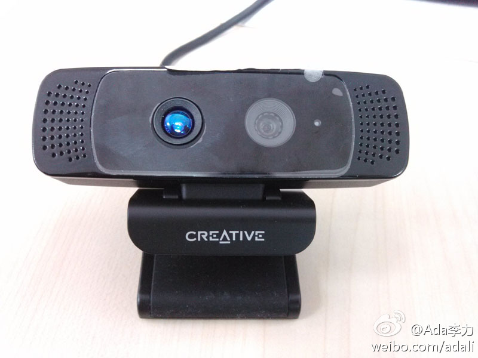
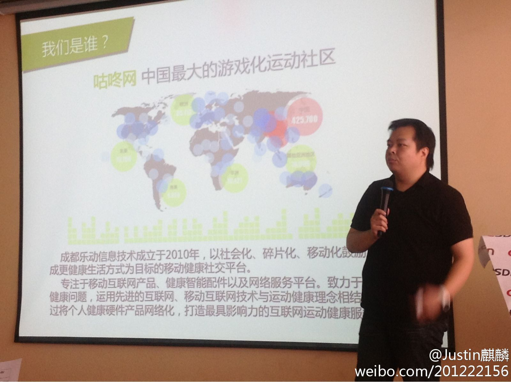
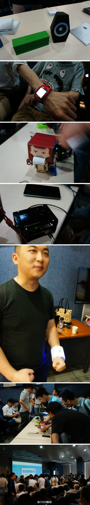

回复@似水流年啲方向james:是啊，完成半小时运动就会觉得这一天开局不错。 //@似水流年啲方向james:最重要的是这半小时能让全天的精神面貌很好@Ada李力:每天早上运动半个小时，已经坚持50天了，知道的朋友有几个会时不时问：“瘦了几斤了？”。瘦身是太难的一件事情，运动已经需要毅力，还要断掉美食带来的快乐，所以我把目标改成健身了，不提体重的事儿。每天能抽出时间抻抻筋比不动强，这就是动力。
这东西看着很像我以前用过的罗技摄像头， 不过就是后面多了个感应器，多了个处理器， 还多了个编程环境。英特尔的智慧眼 - berryMaster的专栏 - 博客频道 - CSDN.NET 网页链接 @mark 
最早的开源布道者们，都得肩负起普及知识的责任。@程开源:最近在搞中国首届#OpenStack训练营#，是一个5天的收费培训，有一个兄弟来砍价，末了，对我说 ：”你们喊着开源的口号，收这么多钱。真是..“ 。 我啷了个切！砍价就砍价嘛，居然拿开源作为砍价的理由，难道技术培训跟开源有关系都应该是廉价的？！ 从来不骂人, 今天hold不住了！网页链接
最近软硬件结合的话题比较火。//@CSDN移动开发者俱乐部@钛钰麒麟:#CMDN Club#咕咚网产品部经理王磊以：产品诞生初衷、产品设计思路、跨平台版本设计、体验统一符合不同使用习惯、系统特性决定交互呈现、设计不一定是完美的等阐述《咕咚运动+》在设计过程中是如何针对iOS、Android不同平台的操作特性以及对应的使用习惯，将产品的各种特点和功能融入到两个平台的案例 
今天，CSDN在深圳和成都同时举办和Mobile相关的活动。@CSDN移动:#Go Mobile#我们先进入短暂的展示环节：吐槽机器人、基于Android的inWatch，超大号运动手环（外壳是3D打印）、NFC设备、Blink音响。大伙的热情很高哇@SeeedStudio @blink-禀临 @映趣科技 
Carol说看曾仕强的视频很有收获。我和Carol争辩起来，我特烦那个老头儿。辩着辩着，我发现自己为什么讨厌他了，他骨子里认同的东西是我所痛恨的，比如滑头，奴性，厚黑，厚古薄今，遵老抑幼等等。曾仕强的“圆通”理论，或许可以让人在这社会上混得不错，但我就是不喜欢不接受，也不会再勉强自己了。
Carol考我一个问题：越权，与玩忽职守，哪个罪过更大？我不假思索地说玩忽职守。Carol说我果然思维西化，在中国，越权的罪更大。我当然能理解，中国还是个权力社会，离专业化，职业化，市场化还有段距离。不过我相信，未来中国社会还是会朝那个更好的方向演进。
你解释得很正点儿～//@曹志士:越权，对上级有威胁，不被收拾，才怪；玩忽职守，也就集体损失点，对个人没威胁，顶多是让自己多给一个被别人指责的靶子。@Ada李力:Carol考我一个问题：越权，与玩忽职守，哪个罪过更大？我不假思索地说玩忽职守。Carol说我果然思维西化，在中国，越权的罪更大。我当然能理解，中国还是个权力社会，离专业化，职业化，市场化还有段距离。不过我相信，未来中国社会还是会朝那个更好的方向演进。